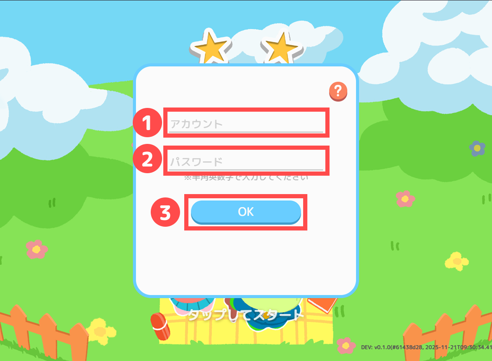
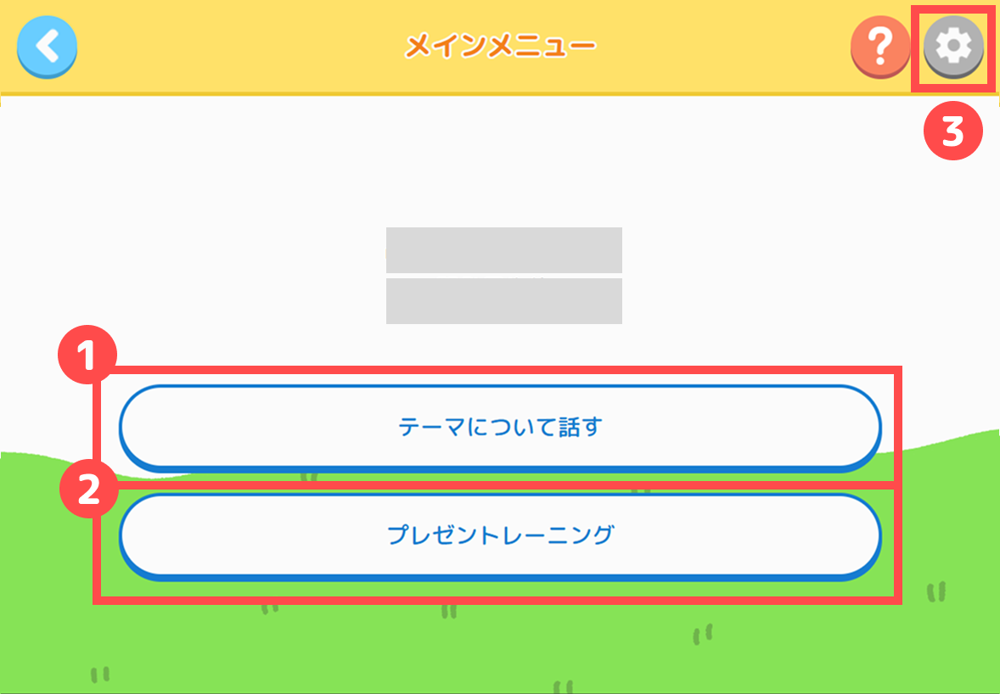
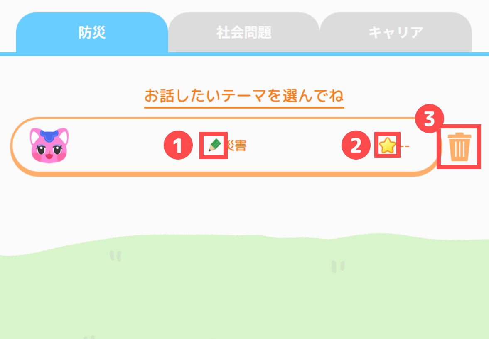
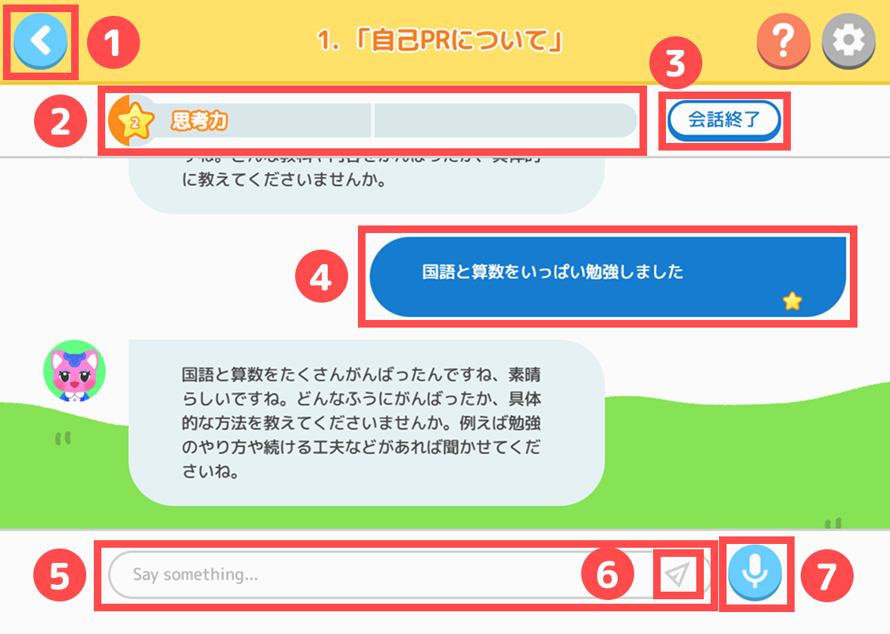
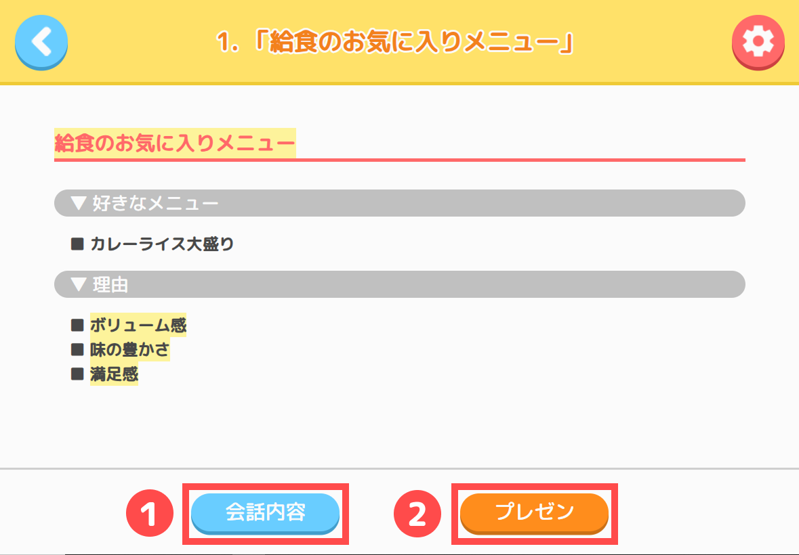
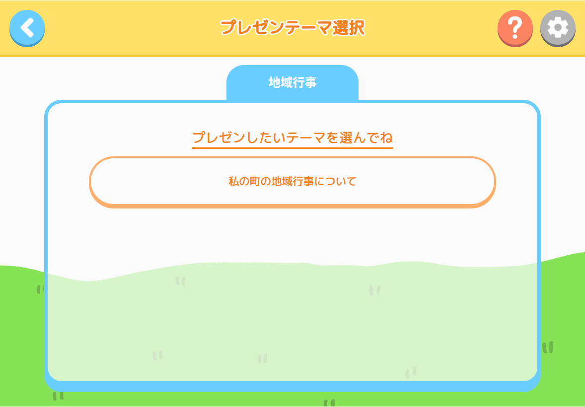
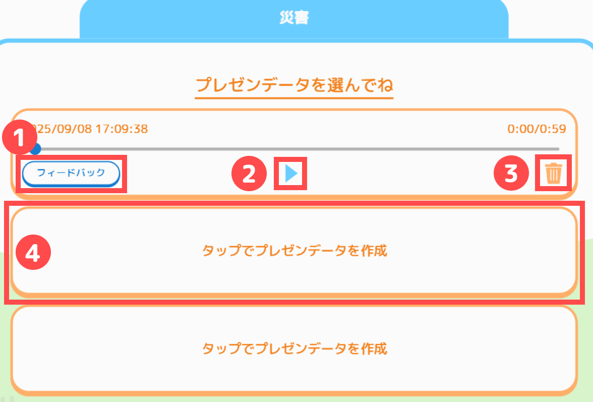
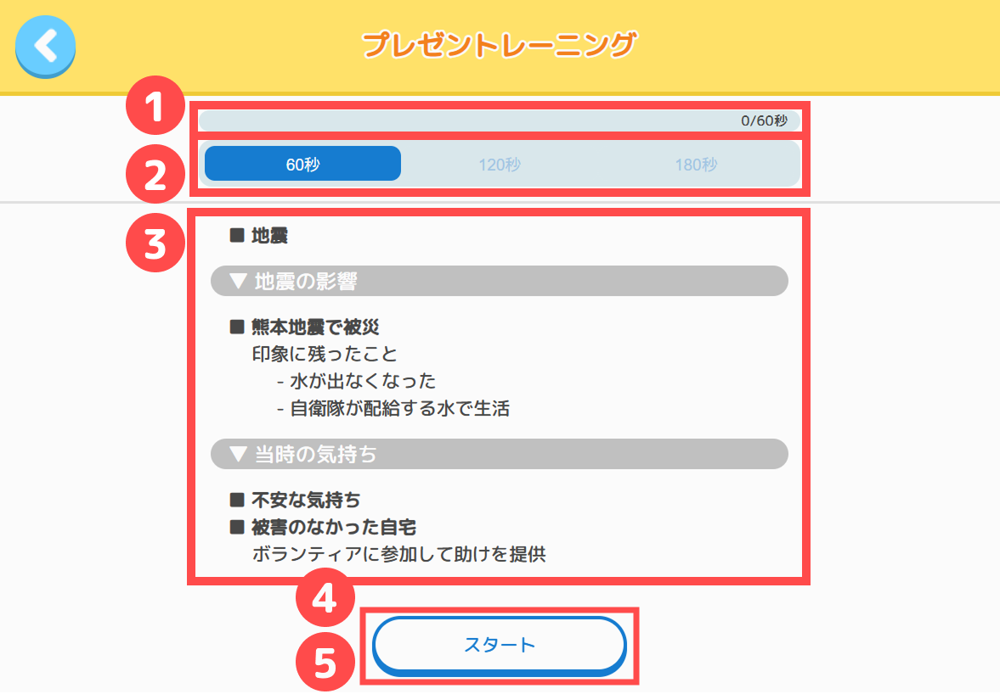
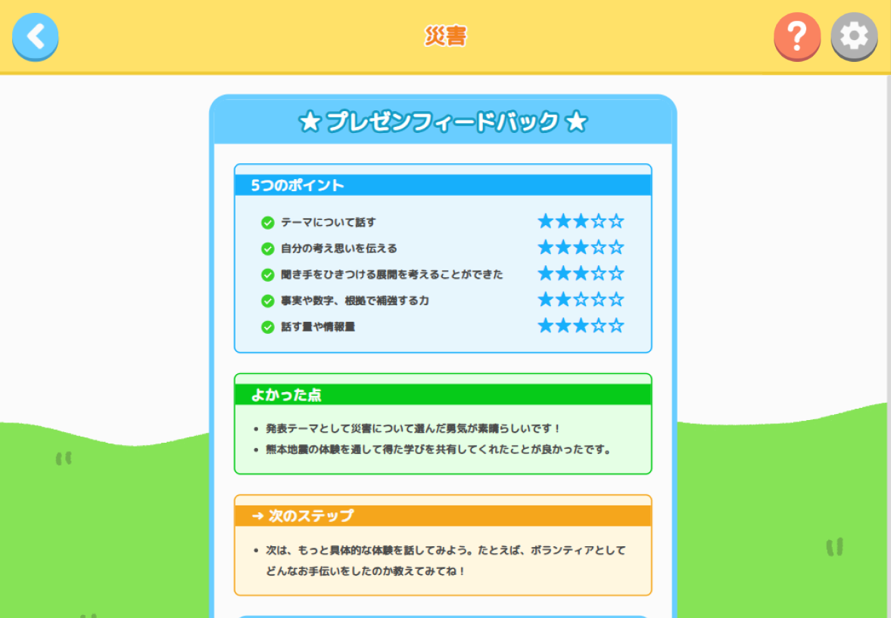
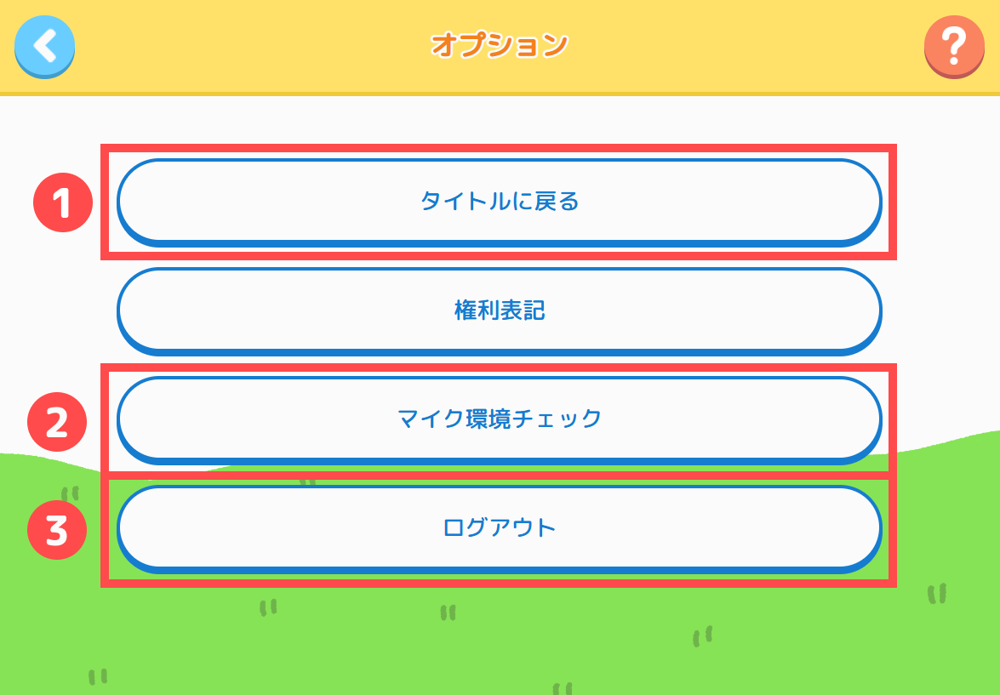

1.初期パスワードでログイン
先生から教えてもらう「初期パスワード」でログインする時の説明だよ。

- アカウント入力欄：自分のアカウント名を入力しよう
- パスワード入力欄：先生から教えてもらった初期パスワードを入力しよう
- OKボタン：ログインが成功すると、自動的にパスワード変更画面へ進むよ
注意！
- 入力欄にスペースが入っているとログイン出来ないよ
- アカウントの大文字・小文字は間違えないようにしよう
2.パスワード変更
君だけが知っているパスワードに変更する画面だよ。
- 新しいパスワード入力欄：自分で決めた新しいパスワードを入力しよう
- 新しいパスワード再入力欄：確認のためもう一度同じパスワードを入力しよう
- パスワード変更ボタン：新しいパスワードに変更できるよ
注意！
- パスワードは半角数字のみ（4～8文字）で設定しよう
- 新しいパスワードは忘れないようにしよう
3.変更したパスワードでログイン
君が「変更したパスワード」でログインする時の説明だよ。
- アカウント入力欄：自分のアカウント名を入力しよう
- パスワード入力欄：変更後のパスワードを入力しよう
- OKボタン：ログインが成功すると、自動的にメインメニューへ進むよ
注意！
- 入力欄にスペースが入っているとログイン出来ないよ
- アカウントの大文字・小文字は間違えないようにしよう
- パスワードを5回以上間違えると、アカウントが一時的に使えなくなってしまうよ。少し待ってから、もう一度挑戦しよう
- パスワードを忘れた時は先生に相談しよう
メインメニュー
学習したい内容を選ぶ画面だよ。

- テーマについて話す：AI先生とお話しながら色んなテーマについて深く考えるよ（初めて使う時はここから始めよう）
- プレゼントレーニング：AI先生とお話しした内容をもとにプレゼンの練習ができるよ
- オプションボタン：色んな情報が確認できるよ。アプリを終わる時はここからログアウトしよう
注意！
- プレゼントレーニングは、テーマについて話した後に行おう。
- みんなで使う端末の場合は、使い終わったらオプションからログアウトしよう。
1.テーマ選択
AI先生とお話したいテーマを選ぶ画面だよ。タブをタップするとテーマコレクションが切り替わるよ。お話したいテーマコレクションが決まったら、テーマを選ぼう。テーマをクリアすると新しいテーマが選べるようになるよ。

- 鉛筆：お話が途中のテーマの目印
- 星：君がもらった思考力ポイント
- ゴミ箱：会話内容を消したい時にタップしよう
注意！
- ゴミ箱をタップしてデータを削除すると、会話内容は元に戻せないよ
2.AI先生とのお話の説明
チャットや声でAI先生とテーマについてお話しよう。君のメッセージには★1〜3の評価がつくよ。
メッセージをタップするとAI先生のアドバイスが見れるから、上手く活かしながらお話してみよう。
思考力が十分溜まったら会話を終了して、キーワードボタンからお話した内容を振り返ろう。

- 戻るボタン：テーマ選択画面に戻るよ。お話した内容は保存されるから、またお話したい時は続きや新しいテーマを確認しよう
- 思考力ゲージ：君がAI先生と上手にお話できると、どんどん溜まるよ
- 会話終了ボタン：思考力ゲージが25ポイント以上になったらタップしよう。キーワード画面に進んで、お話した内容を使ったプレゼンに進むことができる（100回までお話できるよ）
- 文字入力欄：チャットでお話したい時はここをタップしてメッセージを入力しよう
- 紙飛行機：AI先生にメッセージを送る時のボタンをタップしよう
- マイクボタン：声を使ってお話したい時はこのボタンをタップしてお話しよう
注意！
- お話は100回以内に終わらせよう。それ以上だと内容をまとめられないよ
- やり直したい時は、テーマ選択画面のゴミ箱をタップして会話内容を消してね
上手にお話しするコツ
- 一言だけでなく、自分の体験や考えをたくさん話そう
- 「自分だったらどう思うかな？」「ほかの考え方は？」と考えた理由も一緒に話そう
- 話の順番を考えて、分かりやすく話そう
3.キーワード画面の説明
ここでは君がお話した内容を振り返れるよ。大切なポイントをまとめて、プレゼンに向けて準備しよう。

- 会話内容ボタン：会話内容をもう一度確認したい時はタップしてみよう
- プレゼンボタン：お話する準備ができたらタップしてみよう。プレゼンデータ選択画面が表示されるよ
注意！
- キーワードはお話した内容によって変わるよ。大切だと思う事は会話中にしっかり伝えよう
1.プレゼンしたいテーマ選択
プレゼンしたいテーマを選ぶ画面だよ。タブをタップするとテーマコレクションが切り替わり、AI先生とのお話でクリアしたテーマだけ選べるよ。

2.プレゼンデータ選択
プレゼンの記録場所を選んだり、過去のプレゼンを聞き返す画面だよ。

- データ作成ボタン：タップしてプレゼンデータを作成しよう
- 再生ボタン：君がプレゼンした時の音声が聞けるよ
- フィードバックボタン：プレゼンの評価を確認できるよ
- ゴミ箱：プレゼンデータを消したい時にタップしよう
注意！
- ゴミ箱をタップしてデータを削除すると、プレゼンデータは元に戻せないよ
3.プレゼントレーニング
AI先生とお話しした内容についてプレゼン練習をしよう。時間を設定して、その時間内でプレゼンをしてみよう。
終わったら自動でフィードバック画面に進むよ。

- キーワード：クリアしたテーマのキーワードが表示されるよ。プレゼンの参考にしよう
- 時間設定：60 / 120 / 180秒から選べるよ
- 時間ゲージ：プレゼンが進むほど残り時間が減っていくよ
- スタートボタン：タップするとプレゼンの計測が始まるよ
- 終了ボタン：設定した時間に近づくと、スタートボタンが終了ボタンに変わるよ
注意！
- 話した声が50文字以下だと保存されないよ
- 設定した時間が終わると、しばらくすると自動で終了するよ
プレゼンのコツ
テーマ（テーマについて話す）：
- お話しで集めたキーワードを使いながら、テーマについて話そう
独創性（自分の考えを語る）：
- 「〜だと思う」「〜と考えた」など、自分の考えをはっきり言おう
- 自分の体験や意見にもとづいて話そう
構成（聞く人が分かるように話す）：
- 結論 → 理由 → 具体例 の順で話そう
- 話す順番を決めてから、メモを使って伝えてみよう
根拠（自分の考えの理由を示す）：
- 自分の考えには理由や具体例を添えよう
- 「〜だと言える理由は〜だから」の形で伝えよう
情報量（たくさんの内容を語る）：
- 一言だけでなく、詳しく話そう
- 聞き手が想像しやすい具体例を添えよう
4.プレゼンフィードバック
君のプレゼン評価が表示される画面だよ。改善点を把握して、次回のプレゼンに活かそう。

注意！
- コメント量は話した内容や時間によって変わるよ
オプション
基本情報を確認したり、ログアウトができるよ。

- タイトルに戻る：タイトル画面に戻るよ
- ログアウト：終わる時はここをタップしよう